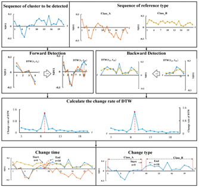
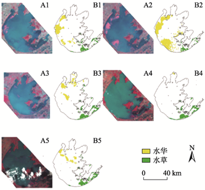
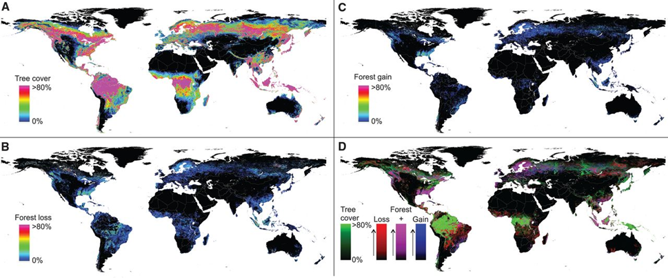

1 1 Introduction to Remote Sensing Cities and Environments
1.1 1.1 Summary
Lecture 1 introduced the fundamentals of remote sensing. I learned how electromagnetic radiation interacts with Earth’s surface and atmosphere. Electromagnetic waves interact with Earth’s surface through absorption, reflection, and transmission, while in the atmosphere, they can be scattered by particle. It also explained the difference between active and passive remote sensing. Passive systems, like Landsat, rely on sunlight to gather data, while active systems, such as SAR, send out their own signals to collect information. This distinction is important because each system works best in different conditions. For example, passive sensors need clear skies, but active sensors can gather data at night or through clouds. The lecture also covered the four main types of resolution in remote sensing. Spectral resolution determines how well a sensor can detect specific wavelengths, which is useful for identifying features like vegetation or water. Spatial resolution refers to the level of detail in an image. MODIS captures less detail with 500-meter pixels, while World Imagery provides much finer detail with 0.3-meter pixels. Temporal resolution focuses on how often a satellite can capture images of the same location. For example, MODIS updates daily, while Landsat revisits the same area every 16 days. Radiometric resolution measures a sensor’s ability to detect small differences in energy, which helps identify slight changes in brightness. These concepts highlight why different satellites are used for different purposes. Some are designed for tracking vegetation, others for monitoring natural disasters, and others for studying long-term environmental changes.
1.2 1.2 Application
Remote sensing is used in many fields, such as environmental monitoring, urban planning, disaster management, and farming research. It collects data from satellites or sensors in the air, allowing researchers to study changes on Earth’s surface with high accuracy. The four resolution types—spectral, spatial, temporal, and radiometric—are important for matching remote sensing tools to specific tasks.
High spectral resolution data is useful for studying vegetation and land cover. Spectral resolution helps identify different features based on how they reflect light. For example, vegetation indices like NDVI use differences between red and near-infrared wavelengths to measure plant health and density. This method is helpful for tracking how ecosystems recover in areas damaged by mining. Hao et al. (2020) used NDVI to monitor how vegetation grew back over time. They found that spectral data was a reliable way to measure how successful land restoration efforts were.

High radiometric resolution plays a key role in detecting small environmental changes. It has been widely used in water quality studies to spot issues like algal blooms or sediment buildup in water systems. This level of radiometric sensitivity allows researchers to detect tiny changes in brightness that might otherwise go unnoticed. These insights are crucial for guiding environmental protection efforts (Feng et al., 2021).

Temporal and spatial resolutions are also important in many practical applications of remote sensing. Temporal resolution is essential for observing dynamic events, such as natural disasters or seasonal changes. For example, MODIS, which offers daily global coverage, has been used to track wildfires and droughts in real time, providing critical information for emergency response (Giglio et al., 2016). Meanwhile, spatial resolution determines how much detail an image can show. Satellites like Landsat, which provide medium spatial resolution, have been key in studying long-term changes like urban growth and deforestation. For instance, Hansen et al. (2013) used Landsat data to map global forest loss and gain over decades, showing how spatial resolution helps detect gradual environmental changes. 
1.3 1.3 Reflection
Reflecting on this week’s lecture, I was reminded of my undergraduate studies in remote sensing, where I used Landsat 8 to study ecological changes in mining areas. A major part of my research involved analyzing vegetation health using NDVI (Normalized Difference Vegetation Index), which measures differences in reflectance between red and near-infrared bands. Back then, I worked with data that had moderate spatial and temporal resolutions, which limited how detailed and frequent my observations could be. This week’s discussion on the four types of resolution made me realize the trade-offs I faced and how higher-resolution data could have significantly improved my research. For example, using Sentinel-2 data with its higher spatial resolution or MODIS with its daily revisit capability could have provided deeper insights into vegetation patterns and seasonal changes in the mining areas. I also found the exploration of active remote sensing, like SAR, particularly valuable. Combining radar data with optical imagery could have addressed some of the challenges I faced, such as cloud cover, which was a major limitation in my previous work. What stood out to me most this week was how different sensor resolutions are tailored to specific research goals. My past work focused on local vegetation changes, but studying global-scale phenomena like deforestation or urban expansion would require different tools, such as sensors with coarser spatial resolution but higher temporal coverage. This broader understanding has inspired me to think about how I can use advanced remote sensing techniques in future projects. In particular, I’m interested in combining data from multiple sources to tackle complex environmental challenges. This week’s material gave me a clearer view of how flexible and powerful remote sensing can be—not just for ecological research, but also for policy-making and practical applications in the real world.
1.4 1.4 References
FENG, T. et al. (2021) Progress and Prospects of Hyperspectral Remote Sensing Technology and its Application in Water Conservancy Research[J]. Journal of Geo-information Science, 2021, 23(9): 1646-1661 https://doi.org/10.12082/dqxxkx.2021.200746
Hansen, M. C. et al. (2013) High-Resolution Global Maps of 21st-Century Forest Cover Change. Science (American Association for the Advancement of Science). [Online] 342 (6160), 850–853.
Hao, Y. et al. (2020) Bidirectional segmented detection of land use change based on object-level multivariate time series. Remote sensing (Basel, Switzerland). [Online] 12 (3), 478-.
Giglio, L. et al. (2016) The collection 6 MODIS active fire detection algorithm and fire products. Remote sensing of environment. [Online] 17831–41.